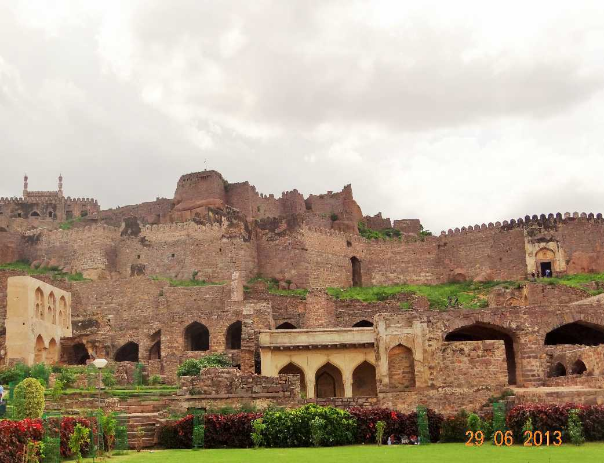
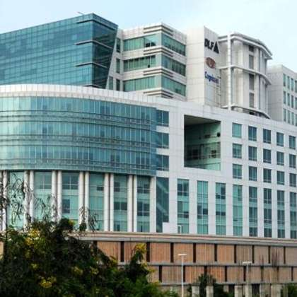

Its not just a city of people but its an emotion for few people . So lets have some breif explanation.
Hussain Sagar seves as the link between the twin cities Hyerabad and Secunderabad . It was built by Hazrat Hussain shah, and today it is a major tourist attraction. It is a large manmade lake of Hyderabad and was constructed on a small tributary of the river Musi. It is a sprawling lake that holds water in the seasons. We can see a BUDDHA STATUE in the middle of the lake . It is entirely made of white granite and finds place among the tallest statues of the world.
To know more about the beauty and history of this lake.
The Birla Mandir in Hyderabad forms a pleasant serene atmosphere and is a perfect place for those who wish to get away from city life and immerse themselves in prayer and meditation. The mandir is dedicated to lord Venkateshwara . This temple is located at top of a 280 feet tall hill called Naubat Pahad. In the mandir we feel has if we entered into a heaven.
That peace in the temple is never replaced.The view from the temple feels the beautiful city view and recently our Telangana government has constructed Telangana Secretariat.And the whole view ia just like wow. To know the beauty along with its origin.
 One of the must visit place in Hyderabad is Golconda .Golconda Fort was first constructed as a mud fort by the rulers of Kakatiya Dynasty.
Then fortress was rebuilt on a granite hill that is 400ft high.One of the most interesting fact was that one handclap at a certain point below the entrance dome can be heard at the highest point of the pavilion almost a kilometer away. This was said to be used for warning the royals in case of an attack. There is lot more to know about this.
What to decribe , no words are sufficient to describe the beautyof this lake and those lightings and what not .One fact about this lake was this lake served as the drinking water source for the residents of Golconda fort in late 16TH centuary.To capitalise on the visitors, the local agencies expanded their tourism plans by turning the lake into a fishing zone. In addition to this, proper seating arrangements, a 2 kilometres (1.2 mi) walkway and restaurants were established.
Durgam Cheruvu is now a place to relax. There is an amphitheatre, and the On the Rocks cafeteria. Boating is also available. A cable bridge with dancing fountain also adorns the lake.Want to know more of its beauty.
This became the recent attraction to the tourist because it was constructed in recent years . The Statue of Equality, also known as the Ramanuja statue. The most important and interesting fact is that
it is 216-ft Statue of Equality is made of a combination of five metals known as 'panchaloha' - gold, silver, brass, copper, and zinc. Feels interesting right want to know more.
Apollo Pharmacy is India’s first, largest and most trusted branded pharmacy network. Apollo Healthcare has a robust presence across the healthcare ecosystem.This hospitals has largest network of the world’s finest and brightest medical experts who provide compassionate care using outstanding expertise and advanced technology. Apollo Heart Institute is our dedicated team of doctors and medical staff that leads the region’s most comprehensive cardiac offering, including diagnosis and preventive care, emergency care, and in-patient and post-op care. Want to know the milestones about Appolo.
Since three decades, Yashoda Group of Hospitals has been providing quality healthcare for the people in their diverse medical needs.Under astute leadership and strong management, Yashoda Group of Hospitals has evolved as a centre of excellence in medicine providing the highest quality standards of medical treatment to all sections of the society. Our work has always been guided by the needs of patients and delivered by our perfectly combined revolutionary technology, best medical expertise and advanced procedures.Know about there specilisations
KIMS Hospitals is one of the largest corporate healthcare groups in India. With an aggregate bed capacity of over 4000 beds, KIMS Hospital is unequivocally the top hospital in Hyderabad.While providing impeccable healthcare services to patients, KIMS Hospitals maintains affordable service rates. One of the largest hospitals in a single location in South India is its Secunderabad unit, with a capacity of 1,000 beds. Best super speciality hospital.
First Hospital in India to perform Womb transplant is Care Hospital. CARE Hospitals was instituted in 1997, Started with 100 beds, 20 cardiologists the Group has now evolved as a multi-speciality health care provider with 16 healthcare facilities serving 7 cities across 6 states in India with over 2700 beds.There vision was to be a trusted, people-centric integrated healthcare system as a model for global healthcare. Many more acheivements.
Continental Hospitals is founded and established with a vision to a focus on healing and a commitment to well-being of a patient.At Continental Hospitals, we value each one of our 50+ specialities as centres of excellence in their own right. Each of our specialties excel in providing integrated, collaborative, and multi-disciplinary care of the highest standards.Continental Hospitals stands tall & proud in fulfilling and embracing national & international guidelines with extraordinary aesthetic ambience, safe design, beautifully appointed patient rooms across all categories.Why to choose them at top .
Indian Institute of Technology Hyderabad (IITH) is a premier institute of science and technology established in 2008. IITH has been consistently ranked in the top 10 institutes in India for Engineering according to NIRF making it one of the most coveted schools for science and technology in the country.IITH offers undergraduate programs in all the classical engineering disciplines, applied sciences, design, as well as several modern interdisciplinary areas.There courses,placements,area of construction, all about IITH.
It is the third oldest university in southern India, and the first to be established in the erstwhile Kingdom of Hyderabad. It was the first Indian university to use Urdu as a language of instruction,although with English as a compulsory subject. The Main campus is a chief intellectual centre in Hyderabad, and its alumni and faculty members include many distinguished individuals.It is very difficult is get an admission in this university. Know the whole history of OU.
Jawaharlal Nehru Technological University, Hyderabad, was established on 2nd october 1972. JNTUH is situated in a sprawling 89-acre campus at Kukatpally, Hyderabad. It has now 4 Constituent Engineering Colleges, one at Hyderabad, one at Kondagattu (Jagithyal), one at Manthani and one at Sultanpur (Medak dist.) and 15 other constituent units on Hyderabad campus.JNTUH offers B.Tech. programmes in 24 disciplines and B.Pharm at UG level, Integrated 5-year dual degree Masters programme, and many more.
Nizam College is one of the oldest and most esteemed institutions of higher education in South India. It was affiliated to the University of Madras for 60 years after its inception, and was made a Constituent College of Osmania University on 19th February 1947.Nizam College offers both undergraduate and postgraduate courses in the Faculties of Arts, Social Sciences, Commerce and Sciences in addition to professional courses such as MBA, MCA, M.Sc.(IS) and BCA. Nizam college is having students to study Ph.D in there cllege so they are developing to that extent.There are having nizam schools to Ph.D level.
The functioning of the University is managed through organisations established in the statute as well as bodies created to implement the statute. These bodies have been so designed that relevant stakeholders and impartial experts can deliberate and decide key concerns of university policy. This university is ment for law.
Telangana is home to one-third of Amazon’s total India employee base across six offices, including the new campus building.Amazon India on recently inaugurated the largest company-owned campus, worldwide, in Hyderabad, the only one outside the US. The e-commerce firm will house more than 15,000 employees out of the over 62,000 members of the India team.
The move is part of Amazon’s expansion plans in India, where retail markets are still to a large extent driven by traditional neighbourhood stores.Amazon’s new campus building, located in Hyderabad’s financial district near Hi-Tech city, is also a step towards countering Walmart Inc., which had acquired India’s largest e-commerce firm Flipkart last year .This is one of the largest centres of a multinational company in the country. Want to be a employee then lets goo.
Tata Consultancy Services (TCS), the leading IT services, business solutions and consulting firm, will inaugurate its first learning and development center for campus trainees in the city tomorrow.
Equipped to train 6,000 professionals annually, the new center will offer TCS’ leading edge learning curriculum over a three-month period to candidates joining TCS straight out of colleges.Tata Consultancy Services is an IT services, business solutions and outsourcing organization that delivers real results to global businesses, ensuring a level of certainty no other firm can match. A part of the Tata group, India’s largest industrial conglomerate, TCS has over 186,500 of the world’s best-trained IT consultants in 42 countries . work in TCS with high package.
 Cognizant provides IT consulting and business process outsourcing services for industries including banking, health care, manufacturing, media, and entertainment. The company hired Brian Humphries, former CEO of Vodafone Business, as its CEO in 2019, while cofounder Francisco D'Souza shifted to the role of vice chairman of the board. Under Humphries, the company has been an active acquirer, adding new services related to cloud computing and artificial intelligence. Cognizant paid a $25 million penalty in 2019 to settle with the Securities and Exchange Commission over a $2 million bribery scheme in India. Three former top executives were charged in the scandal. Apply now.
Capgemini’s journey in Hyderabad started around 16 years ago, acting as an important hub for our Financial Services (FS) business. The city is home to a large campus (Gachibowli Main Campus) and office at GAR.
Our offices are equipped with state-of-the-art infrastructure and multi-cuisine cafeterias, Creche & fitness center. Successfully recertified our Gachibowli campus as Platinum rated green building LEED certified by India Green Building Congress (IGBC) and also been awarded as the most ‘Green Campus’ by Government of Telangana. This campus comprises of an open picturesque landscape of extensive lawns, a waterbody and an open-air amphitheatre as well as extensive indoor and outdoor recreational facilities. Be a part of capgemini.
IBM, in full International Business Machines Corporation, leading American computer manufacturer, with a major share of the market both in the United States and abroad. Its headquarters are in Armonk, New York.It was incorporated in 1911 as the Computing-Tabulating-Recording Company in a consolidation of three smaller companies that made punch-card tabulators and other office products. Join them to know more.
You can’t talk about biryanis without mentioning the Hyderabadi Biryani. Cooked with either mutton or chicken, and laced with rich ingredients, this recipe is the stairway to heaven. Believe it or not, this dish is such a favourite that people don’t mind having it for breakfast, lunch or dinner! Want to taste so try making it. 
It is originally an Arabic dish and was introduced to the Hyderabad State by the Chaush people during the rule of the Nizams (the former rulers of Hyderabad State). Local traditional spices helped a unique Hyderabadi haleem evolve, that became popular among the native Hyderabadis by the 20th century. Want to taste so try making it.
It is believed to be brought to Hyderabad by Persian immigrants who landed at Mumbai port and then migrated to Pune and Hyderabad. The preparation of Irani chai is different from that of normal tea. Want to taste so try making it.
After you’ve savoured the rich & royal biryanis and kebabs, you need to end it on a sweet note. This vermicelli pudding is made during special occasions and is a hit amongst all ages. Prepared with milk and dates, it has a sweet-creamy taste. If you prefer crunchiness, add some dry fruits. Voila! to taste so try making it.
Samosa + Keema = Need to have it right now! This is something that will perk up your appetite instantly. You don’t need an occasion to try this little snack combo. And we bet you have never tasted something as tempting as these samosas! Want to taste so try making it.